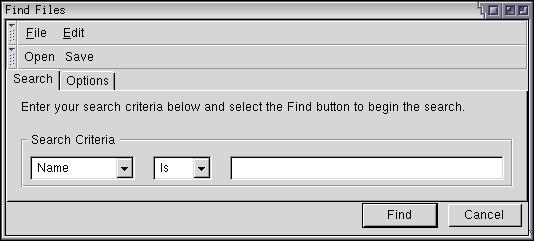
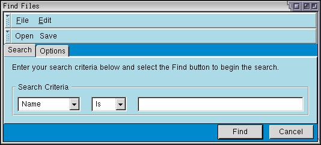
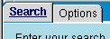
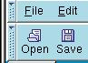
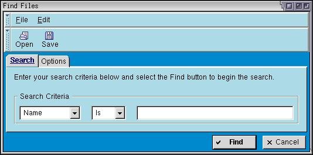

Creating a Skin
This section describes how to create a simple skin. For simplicity, we'll only apply it to the find files dialog.
A Simple Skin
The image below shows the current find files dialog. Let's create a skin that we can apply to it. Normally, a skin would apply to the enitre application, but we'll focus on just the find files dialog to make it easier. For this reason, we'll modify only the file findfile.css rather than the global.css file. This section assumes that you are starting with the Classic skin. You may wish to make a copy of the files used by the find files dialog before editing.

You need to create a file 'findfile.css' in a custom skin. Or, you can temporarily place it in the content directory and refer to it using a stylesheet directive. You can modify the existing findfile.css directly to see what it looks like, or you can create a custom skin and link to that. To create a skin, do the following:
- Create a directory somewhere where you want to place the skin files.
- Copy a manifest file (contents.rdf) from the Classic or Modern skin into this new directory.
- Modify the references in the manifest file to a custom name for your skin. For example, change references of 'classic/1.0' to 'blueswayedshoes/1.0'.
- Add a line to the file 'chrome/installed-chrome.txt of the following
form:
skin,install,url,file:///stuff/blueswayedshoes/
where the last part points to the directory you created. Make sure to add a slash at the end.
Copy the original findfile.css into the new directory. We'll use this as a basis for the new skin. We can then refer to it using the URL 'chrome://findfile/skin/findfile.css'. First, let's decide what kind of changes we want to make. We'll make some simple color changes, modify the button styles, and modify the spacing a bit. Let's start with the menus, toolbars and the overall tab pabel.
The following style rules added to findfile.css will cause the changes shown in the accompanying image.
window > box {
background-color: #0088CC;
}
menubar,menupopup,toolbar,tabpanels {
background-color: lightblue;
border-top: 1px solid white;
border-bottom: 1px solid #666666;
border-left: 1px solid white;
border-right: 1px solid #666666;
}
caption {
background-color: lightblue;
}
The inner box of the window (which actually surrounds all of the window content) has been changed to have a medium blue color. You can see this blue behind the tab strip and along the bottom of the window. Four elements, the menubar, the menupopup, the toolbar and the tabpanels appear in light blue. The border around these four elements has been changed to give a heavier 3D appearance. You can see this if you look closely. The background color of the caption has also been changed to match the background.
The first rule above (for 'window > box') specifies that the child box of the window has a different color. This probably isn't the best way to do this. We should really change this to use a style class. Let's do this. That way, we can modify the XUL without needing to keep the box as the first child of the window.
.findfilesbox {
background-color: #0088CC;
}
XUL:
<vbox class="findfilesbox" orient="vertical" flex="100%">
<toolbox>Next, let's modify the tabs. We will make the selected tab bold and change the rounding on the tabs.
tab:first-child {
-moz-border-radius: 4px 0px 0px 0px;
}
tab:last-child {
-moz-border-radius: 0px 4px 0px 0px;
}
tab[selected="true"] {
color: #000066;
font-weight: bold;
text-decoration: underline;
} Two rules change the normal tab appearance, the first sets the rounding on the first tab and the second sets the rounding on the last tab. Used here is a special Mozilla style rule, -moz-border-radius, that creates rounded border corners. The upper left border of the first tab and the upper right border of the second tab are rounded by four pixels and the other corners have a round corner of zero pixels, which is equivalent to no rounding. Increase the values here for more rounding and decrease them for a more rectangular look.
 The last rule only applies to tabs that have their selected attribute set to true. It makes the text in the selected tab appear bold, underlined and dark blue. Note in the image that this style has applied only to the first tab, because it is the selected one.
It is somewhat difficult to distinguish the buttons on the toolbar from the commands on the menu. We could add some icons to the buttons to make them clearer. Mozilla Composer provides some icons for open and save buttons, which we'll just use here to save time. We can set the image for a button using the list-style-image CSS property.
#opensearch {
list-style-image: url("chrome://editor/skin/icons/btn1.gif");
-moz-image-region: rect(48px 16px 64px 0);
-moz-box-orient: vertical;
}
#savesearch {
list-style-image: url("chrome://editor/skin/icons/btn1.gif");
-moz-image-region: rect(80px 16px 96px 0);
-moz-box-orient: vertical;
}Mozilla provides a custom style property -moz-image-region which can be used to make an element use part of an image. You can think of it as a clip region for the image. You set the property to a position and size within an image and the button will display only that section of the image. This allows you to use the same image for multiple buttons and set a different region for each one. When you have lots of buttons, with states for hover, active and disabled, this saves space that would normally be occupied by mutliple images. In the code above, we use the same image for each button, but set a different image region each one. If you look at this image (btn1.gif), you will notice that it contains a grid of smaller images, each one 16 by 16 pixels.
 The -moz-box-orient property is used to orient the button vertically, so that the image appears above the label. This property has the same meaning as the orient attribute. This is convenient because the skin cannot change the XUL. Most of the box attributes have corresponding CSS properties.
Next, we'll make a couple of changes to the buttons along the bottom, again reusing some icons from Mozilla to save time. If creating your own skin, you will need to create new icons or copy the icons to new files. If following the example in this section, just copy the files to your new skin and change the URLs accordingly.
#find-button {
list-style-image: url("chrome://global/skin/checkbox/images/cbox-check.jpg");
font-weight: bold;
}
#cancel-button {
list-style-image: url("chrome://global/skin/icons/images/close-button.jpg");
}
button:hover {
color: #000066;
}We add some images to the buttons and make the Find button have bold text to indicate that it is the default button. The last rule applies to buttons when the mouse is hovering over them. We set the text color to dark blue in this case. Finally, some minor changes to the spacing around the items, by setting margins:
tabbox {
margin: 4px;
}
toolbarbutton {
margin-left: 3px;
margin-right: 3px;
}After those changes, the find files dialog now looks like the following:

As you can see, some simple changes to the style rules has resulted in quite a different appearance to the find files dialog. We could continue by changing the menus, the grippies on the toolbar and the input and checkbox elements.
Creating a Global Skin
The skin created above is simple and only applies to the find files dialog. Some of the changes made to the skin could be placed in the global style sheets (those in the global directory of the skin) to be applied to all applications. For example, having different images for the check boxes in the find files dialog as other windows looks a little odd. This change should really be moved into the global style sheet.
Try moving the CSS styles from findfile.css into global.css and then look at some of the dialogs in Mozilla. (The cookie viewer is a good example.) You will notice that it has adopted the rules that we have added. Some of the rules conflict with those already in the global stylesheets. For example, rules are already defined for buttons and tabs and so on and we defined additional rules for them. When changing the global skin, you would need to merge the changes into the existing rules.
For the best skinnability, it is best to declare appearance related style rules in the global directory rather than in individual style files. This includes colors, fonts and general widget appearances. If you change the color of something in a local skin file (such as findfile.css), the dialog may look odd if the user changes their global skin. Don't expect the user to be using the default one.
(Next) The next section discusses how to make a XUL application localizable.
Find files example with this skin: Source View Stylesheet